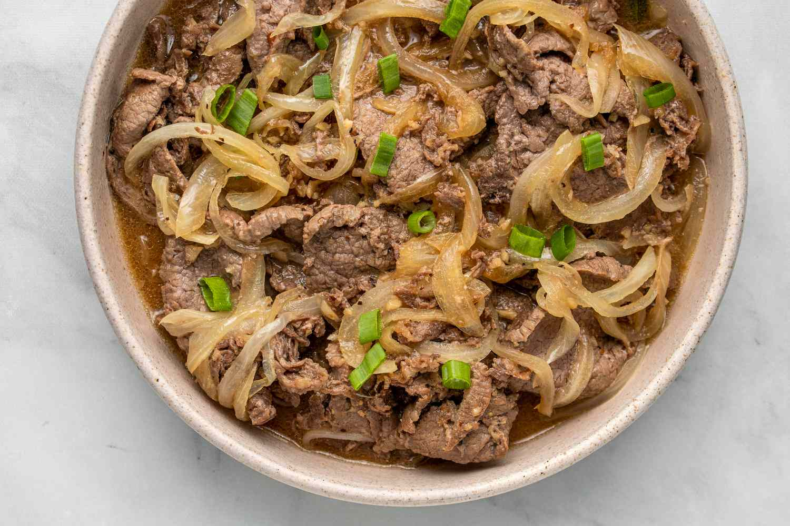

Bistek

Description
Bistek Tagalog is a type of Filipino beef stew. This is also known as Beefsteak to some people.
It is comprised of thin slices of beef and a generous amount of onions. These are stewed in a
soy sauce and lemon juice mixture until the beef gets very tender. It is best enjoyed with warm rice.
Ingredients
-
1 1/2 lbs beef sirloin thinly sliced
-
5 tablespoons soy sauce
-
4 pieces calamansi or 1-piece lemon
-
1/2 tsp ground black pepper
-
3 cloves garlic minced
-
3 pieces yellow onion sliced into rings
-
4 tablespoons cooking oil
-
1 cup water
-
1 pinch salt
How to cook Bistek tagalog
-
Marinate beef in soy sauce, lemon (or calamansi), and ground black pepper for at least 1 hour. Note: marinate overnight for best result
-
Heat the cooking oil in a pan then pan-fry half of the onions until the texture becomes soft. Set aside
-
Drain the marinade from the beef. Set it aside. Pan-fry the beef on the same pan where the onions were fried for 1 minute per side. Remove from the pan. Set aside
-
Add more oil if needed. Saute garlic and remaining raw onions until onion softens.
-
Pour the remaining marinade and water. Bring to a boil.
-
Add beef. Cover the pan and simmer until meat is tender. Note: Add water as needed.
-
Season with ground black pepper and salt as needed. Top with pan-fried onions.
-
Transfer to a serving plate. Serve hot. Share and Enjoy!